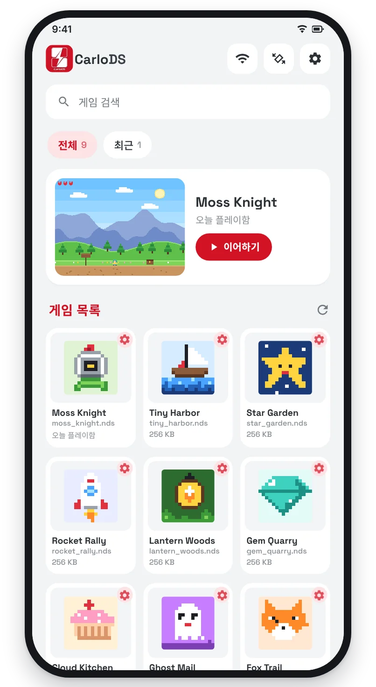
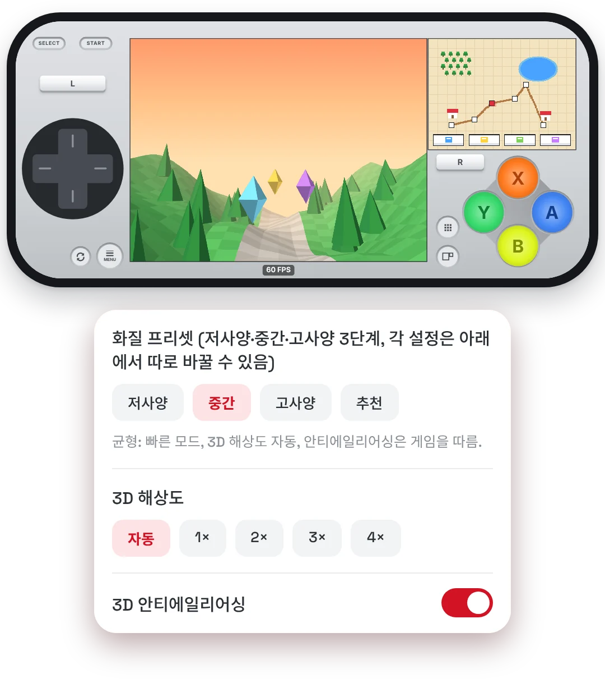
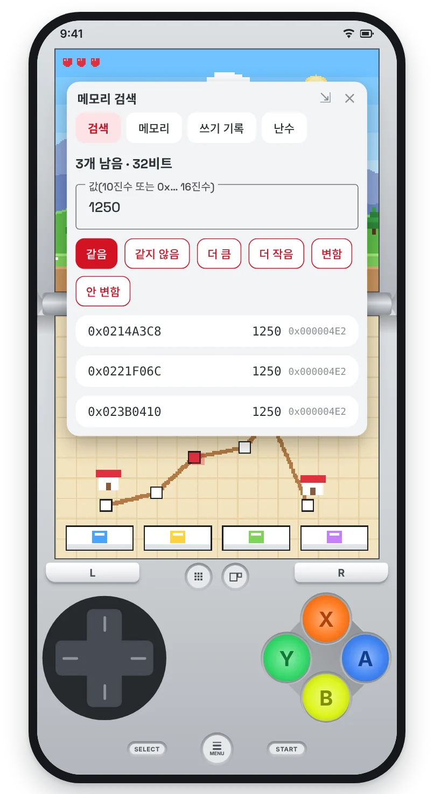
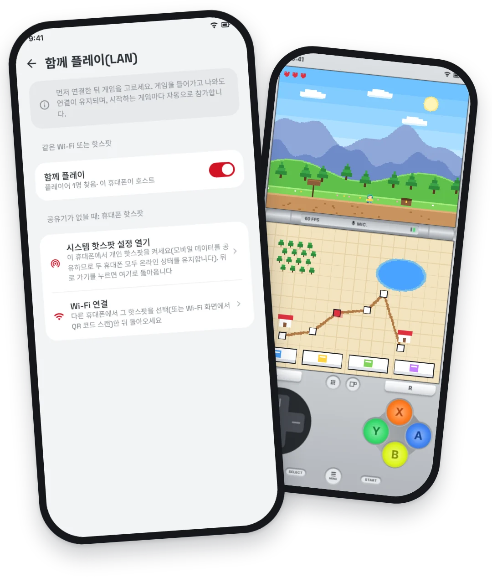

기능
CarloDS는 Android 스마트폰과 태블릿을 위한 NDS 에뮬레이터입니다. ARM9·ARM7 프로세서, 2D·3D 그래픽, 사운드, 무선 통신, 내장 BIOS를 포함한 에뮬레이션 코어를 모두 자체 개발했으며, 다수의 실기 테스트 결과를 기준으로 타이밍과 화면을 항목별로 보정하여 실기와 동일한 동작을 목표로 합니다. 대부분의 게임은 BIOS 파일 없이 실행되며, ZIP 형식도 지원합니다.
자체 개발 고정밀 코어
- 실기 테스트 결과를 기준으로 CPU 타이밍, DMA, 3D 렌더링, 안티에일리어싱, 클리핑 등을 항목별로 보정
- 두 가지 코어 제공실기에 가장 가까운 정밀 코어, JIT 가속으로 대부분의 게임을 크게 빠르게 실행하는 고속 코어
- BIOS 내장으로 별도 준비가 필요 없으며, 게임 폴더에 사용자의 BIOS·펌웨어 파일이 있으면 자동으로 사용

게임 라이브러리
- 게임 아이콘과 제목을 자동으로 불러오며, 하위 폴더와 ZIP 파일 지원
- 검색, 최근 플레이 목록, '이어서 하기' 기능 제공
- 게임별 커버 이미지 설정 가능
- 처음 사용할 때 기기 성능 검사를 통해 최적의 설정을 자동으로 추천

화면 배치와 조작
- 세로, 가로 큰 화면+작은 화면, 가로 좌우 나란히, 가로 단일 화면 배치를 한 번에 전환하고 주화면 교체 가능
- 아래 화면 터치 조작 지원
- 화면 방향 자유롭게 선택 가능
- 화면 버튼을 숨기고 컨트롤러로 조작 가능
- 덮개 닫기·열기 재현(대부분의 게임은 덮개를 닫으면 절전 상태로 전환)

화질과 성능
- 저사양·중급·고사양 세 가지 프리셋 제공, 성능 검사 후에는 기기에 맞춘 권장 설정도 제공
- 3D 최대 4배 해상도(자동 설정 가능), 3D 안티에일리어싱, 텍스처 스무딩, 2D 부드러운 확대
- 렌더링 방식Software, OpenGL ES, Vulkan
- 필터스무딩, LCD, 스캔라인, xBR, CAS 선명화, 밝기·대비 조절
- 성능 옵션16비트 출력, 3D 멀티스레드 렌더링, 3D 명령 즉시 처리, 자동 프레임 스킵
- 화면·성능·컨트롤러 설정을 게임별로 저장 가능
- 화면 정보 표시부팅 애니메이션, 프레임 레이트, 상세 성능 정보

저장과 도구
- 여러 개의 상태 저장 슬롯, 불러오기 취소 지원, 게임이 중단되면 진행 상황 자동 저장
- 빨리 감기(최대 4배), 되감기(1회 5·10·15초), 연사(속도 조절 가능)
- 게임 내 바로 가기음량, 빠른 저장, 스크린샷, 덮개, 치트, 메모리 검색, 되감기(표시 항목 선택 가능)
- 치트Action Replay 코드 지원, usrcheat.dat·cheats.xml 데이터베이스 및 .mch·.dct·.cht·텍스트 파일 불러오기
- 메모리 검색플로팅 창에서 실행되어 검색 중에도 게임이 멈추지 않으며, 메모리 보기와 쓰기 기록 기능 제공

무선 통신과 다운로드 콘텐츠
- 로컬 무선 통신같은 Wi‑Fi에 연결된 기기끼리 통신 가능, 공유기가 없으면 휴대폰 핫스팟 사용 가능
- 종료된 온라인 서비스의 대체 기능을 내장하여 이 기기가 로컬 네트워크의 기기에 서비스 제공(일부 게임 지원)
- 다운로드 콘텐츠(실험적 기능)게임 내 선물과 배포 콘텐츠를 내장하여 인터넷 연결 없이 수령 가능

기타 기능
- RetroAchievements 업적 지원
- 클라우드 저장Google Drive로 세이브 데이터 동기화
- 컨트롤러와 키보드 지원, 모든 버튼 재지정 가능
- 마이크 입력바람을 불거나 말하는 조작에 사용하며 게임 실행 중에만 녹음
- GBA 슬롯당사 GBA 에뮬레이터 RetroGenY의 GBA 게임 삽입 또는 진동 팩(기기 진동 사용) 지원
- 본체 프로필닉네임, 생일, 좋아하는 색, 메시지, 언어
- 문제 신고실행 기록을 이메일로 개발자에게 전송